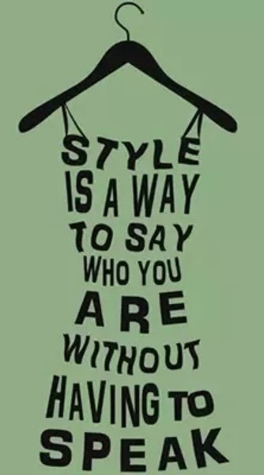

|  |
Welcome to Our Fashion Psychology WebsiteSince childhood, we've all heard the familiar adage: "First impressions matter." People assess us based on our attire, posture, and body language long before they discover our true personalities. This phenomenon exists because: The clothes we wear are a language, a form of nonverbal communication if you will. Our clothes speak to our personality, our values, our mood, and our interests. It can even hint at our socioeconomic status, a factor often used in forming people's initial judgments of us. Back in second grade, I used to argue that how one dresses shouldn't affect people's perceptions of them - that the world shouldn't operate that way. However, my perspective has evolved, and now, I view clothing as a tool for self-expression rather than a means to manipulate others. The way I dress empowers me for my day’s journey, boosting my confidence, strength, and energy - or sometimes, helping calm my mind during an overwhelming day. I've come to realize that my clothing choices, even when prioritizing comfort, don't diminish my standing in society. Instead, the clothes we wear narrate our story, but it's within our control to shape that narrative and wear it proudly. Clothing is an avenue for expressing our individuality, a choice made primarily for ourselves. Returning to my second-grade self and my earlier assertion, clothing isn't the sole determining factor. There is another factor involved: body language. Our attire should align with the story we want to convey, however it's how our clothes complement our posture and demeanor that is the true mark of our personality and story. |